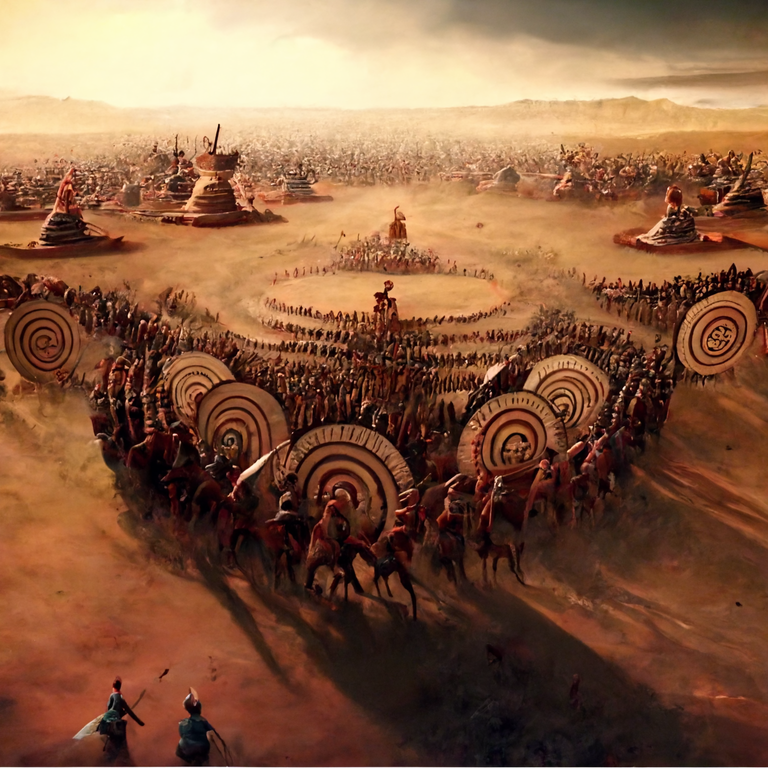

PARAM SCIENCE NEWSLETTER
 The supreme art of war is to subdue the
enemy without fighting.
The supreme art of war is to subdue the
enemy without fighting.
DECEMBER 2022
- World AIDS Day: 1st Dec
- World Computer Literacy Day: 2nd Dec
- National Pollution Prevention Day: 2nd Dec
- National Energy Conservation Day: 14th Dec
- National Mathematics Day:22nd Dec
- International Bio Diversity Day: 29th Dec
SCIENCE DAYS
Did you know people with more birthdays live longer!
- Werner Karl Heisenberg: 5th Dec 1901
- Carl Gustav Jacob Jacobi :10th Dec 1804
- Alfred Werner: 12th Dec 1866
- Srinivasa Ramanujan: 22nd Dec 1887
- Isaac Newton :25th Dec 1642
COOL COMPARISONS -Comparing Science data of war throughout history.
ANCIENT INDIA CONTEXT
THE SCIENCE BEHIND ANCIENT INDIAN WAR FORMATIONS
-
The army was composed of four arms
(chaturanga).
- Infantry
- Cavalry
- Chariots
- Elephants
VYUHA
A “Vyuha” is a dynamic formation that continuously adapts itself to the position and situation of the war.
STORY OF THE MONTH
SURVIVORSHIP BIAS
A WORLD WAR II - WARPLANES STORY
During World War II a few warplanes had returned after missions. It was decided to strengthen the planes by adding armour on them. After measuring the bullet holes on the warplanes it was found that the fuselage had the highest bullets per unit area followed by the wings and finally the tail. While common sense seems to dictate that we reinforce the fuselage the most, the statistician Abraham Wald steps in to save the day. He suggested that the areas with least damage be reinforced.
This is because we are looking at planes that actually made it back after missions. Thus areas with damage symbolised areas that the plan can get hit and still fly back to base. So the areas with minimal damage and are critical to the plane and actually need to be reinforced.
This oversight is commonly known as Survivorship Bias.
NEWS AND LATEST RESEARCH
SNAPSHOTS OF LATEST WAR AND DEFENCE TECHNOLOGY
INDIA SUCCESSFULLY TEST FIRES AGNI PRIME BALLISTIC MISSILE.
DRDO is the R&D wing of Ministry of Defence, with a vision to empower India with cutting-edge defence technologies.
Currently, wars can't be done right with robots as they might find it difficult to discriminate between targets. They might even harm innocent civilians in certain cases. There is also an additional risk of hacking but all this will change soon..
BANGALORE FORT

- The Bangalore Fort began in 1537 as a mud fort built by Kempe Gowda which is an engineering marvel.
- Hyder Ali in 1761 replaced with the fort Stone structure
- Tipu Sultan in 18th century renovated structure which stood the test of time.
The fort at Bangalore has a perimeter of about one mile.
With the capture of the Bangalore Fort the Army of British East India Company replenished supplies and obtained a strategic base from where it could attack the Capital of Tippu Sultan i.e. Srirangapatna.

EXHIBIT OF MONTH
CHAKRAVYUHA
A DYNAMICALLY CHANGING MAZE
A dynamic maze exhibit which shall showcase the confusion and ingenuity of the Chakravyuha. The exhibit shall involve revolving partitons to simulate the true workings of the Chakravyuha. We are currently exploring the possibility of enhancing this with an AR experience.
Soldier at the blue dot is responsible to start the outward oscillatory motion by taking a step to the left. This triggers a chain reaction where each soldiers in the same ring will take a step to the left to take up the position emptied by the front soldier. The soldier in the next ring will take a step in the opposite direction (right) to trigger the chain reaction where every soldiers moves to the right to fill up the space emptied by the front soldier. So, there are seven circles of alternate clockwise and anticlockwise rotating soldiers that moves so fast that the enemy is completely lost and totally deceived into thinking that the formation is in few numbers as the actual strength of the inner rings cannot be estimated from outside the formation.
THE LOGIC BEHIND IT!
The chakravyuha as seen in the mahabharat has 7 layers. This can be unlocked by using a simple calculation as follows
Each layer = 1 divided by 7 = 0.142857142857…..
This is the pattern to break each layer. Soldiers will be entering the whirlwind of layers indefinitely. Like wise as one progresses to next layer one numeral increases.
So at the 7th layer it still increases
0.142857*2 = 0.285714 – Layer 2. Here the number of soldiers are doubled.
0.142857*3 = 0.428571 - Layer 3. Here the number of soldiers are tripled.
...
0.142857*7 = 0.999999999 – Layer 7. The number of soldiers that will be
entering in batches.
Arjuna must have had an energy level higher than this. This is the mathematical trick in Chakravyuha.
TOPIC OF MONTH
LANCHESTER'S LAWS
THE MATH BEHIND WAR STRATEGIES
The Lanchester equations are differential equations describing the time dependence of two armies' strengths A and B as a function of time, with the function depending only on A and B
The solution to these equations shows that:
- If α=β, i.e. the two sides have equal firepower, the side with more soldiers at the beginning of the battle will win;
- If α=β, i.e. the two sides have equal firepower, the side with more soldiers at the beginning of the battle will win;
- If A>B and α>β, then Red will win, while if A < B and α< β, Blue will win;
- If A>B but α< β, or A< B but α>β, the winning side will depend on whether the ratio of β/α is greater or less than the square of the ratio of A/B. Thus, if numbers and firepower are unequal in opposite directions, a superiority in firepower equal to the square of the inferiority in numbers is required for victory; or, to put it another way, the effectiveness of the army rises proportionate to the square of the number of people in it, but only linearly with their fighting ability.
The first three of these conclusions are obvious. The final one is the origin of the name "square law".
WAR GAMES - Monthly Challenges
A FEW WAR THEMED PUZZLES AND CHALLENGES
Puzzle 1 : Secret Tents Every tree has one tent either above, below, or beside it. No tent can be in a square touching another tent (even diagonally). The numbers beside each row and column tell you how many tents are in that row or column. Can you find thelocations of all tents?
Puzzle 2 : Missiles
3 cities care having a three way war. The winner is the city which survives after the destruction of the other 2 cities.
City A has nuclear bombs and never fails to destroy the targeted city. City B has Medium grade missiles and has a 50% chance of destroying the targeted city. City C being the weakest has only 1 in 3 chances of destroying it’s target. C has one chance to attack, followed by B and finally A after which we return to city C. This continues in the same order till only one city is left.
Assume that everyone adopts the best strategy. Who should City C target first to have best chance of survival?
PARAM SCIENCE EXPERIENCE CENTRE -About
Param Science Experience centre is a unique experience seeks to guide young India by inspiring curiosity, nurturing creativity and establishing confidence.
The world class ticketed centre aims to ignite and inspire passion for science and technology by nurturing the seed of scientific awareness at all ages. The total centre spans indoor 1,00,000 sq feet and outdoor 1,00,000 sq feet.
This shall be a monthly themed newsletter. Every month a new theme will be chosen and presented in the context of science and technology
To be featured please send in your ideas, articles and images to content@paraminnovation.org